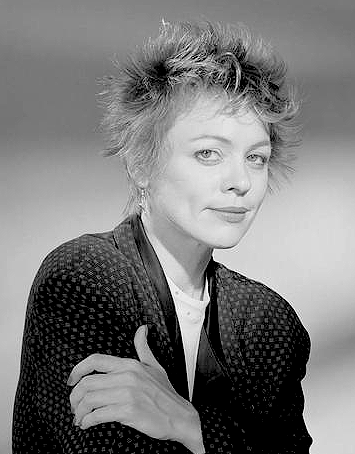

Performance, tecnología y narración en el arte contemporáneo
Laurie Anderson
El lenguaje es un virus que viene del espacio exterior.
-Laurie Anderson

Una voz singular en el arte contemporáneo
Laurie Anderson es una artista multidisciplinaria cuya obra abarca performance, música, cine y arte multimedia. Su práctica se caracteriza por la exploración del lenguaje, la tecnología y la narración como herramientas para construir experiencias artísticas complejas. A lo largo de su carrera, ha desarrollado un estilo propio que combina lo experimental con lo accesible.
Su trabajo se distingue por el uso de la voz como elemento central. A través de relatos, textos y composiciones sonoras, crea piezas que invitan a reflexionar sobre la comunicación, la memoria y la percepción. La tecnología aparece como un medio para expandir estas posibilidades expresivas.
Además, su enfoque integra elementos visuales, musicales y performáticos, generando obras que no se limitan a un único formato. Esta hibridez la posiciona como una figura clave dentro del arte contemporáneo.

Trayectoria y proyección internacional
Nacida en Estados Unidos, Laurie Anderson comenzó su carrera en el circuito del arte experimental y la performance en la década de 1970. Su reconocimiento se amplió cuando logró llevar propuestas conceptuales a públicos más amplios, manteniendo una fuerte identidad artística.
Uno de sus trabajos más conocidos es O Superman, una pieza que combina música electrónica y narrativa, y que alcanzó difusión internacional. Este tipo de obras evidencian su capacidad para integrar lo experimental con formatos más populares.
A lo largo de su trayectoria, ha presentado sus obras en museos, teatros y festivales de todo el mundo. Su producción ha influido en múltiples disciplinas y continúa siendo una referencia en el cruce entre arte, tecnología y narración.